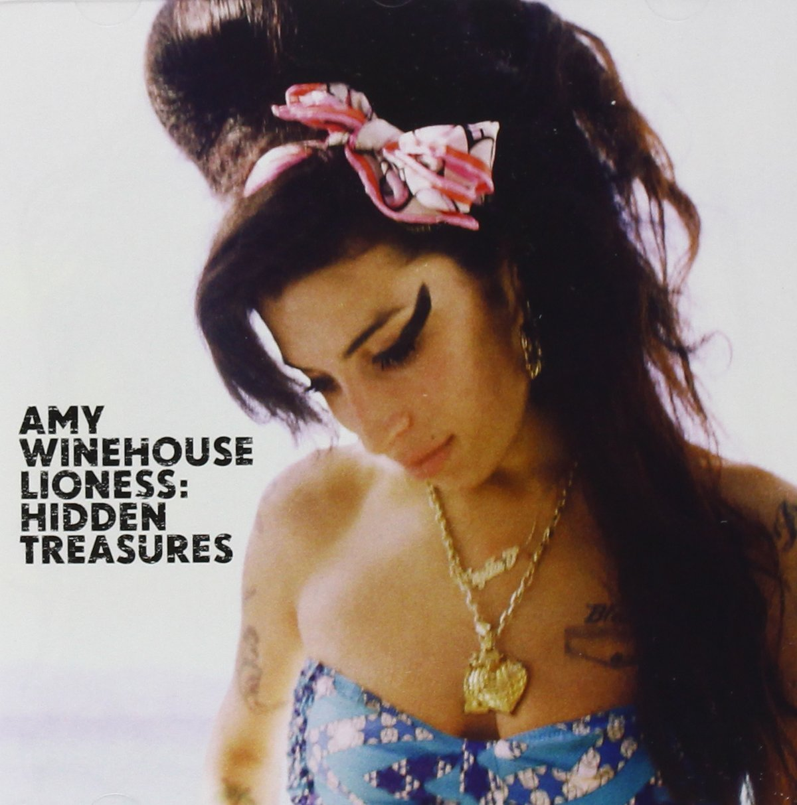

| Nom de naissance | Amy Jade Winehouse |
|---|---|
| Surnom | Amy |
| Naissance | 14 septembre 1983
Londres, Angleterre, Royaumes-Unis |
| Nationalité | Anglaise |
| Décès | 23 juillet 2011 (à 27 ans)
Londres, Angleterre, Royaumes-Unis |
| Profession | Auteur-Compositeur-interprète, Chanteuse |
| Genre musical | Soul, Jazz, R&B, Reggae |
| Instruments | Voix
Guitare Batterie |
| Site internet | www.amywinehouse.com |
Amy Jade Winehouse, née le 14 septembre 1983 et morte le 23 juillet 2011 à Londres, est une chanteuse et auteur-compositrice-interprète britannique, connue pour sa voix caractéristique rappelant celles d'Ella Fitzgerald, Sarah Vaughan ou encore Dinah Washington. D'une manière générale, sa musique est un mélange de styles comme le jazz, le blues ou encore la soul. En 2003, Amy Winehouse publie son premier album, Frank. Il rencontre le succès commercial et un bon accueil critique au Royaume-Uni, et en 2006, son second album intitulé Back to Black, no 1 des ventes dans plusieurs pays, la propulse au rang de star planétaire. Elle remporte ainsi trois des quatre prix les plus importants aux Grammy Awards en 2007 : Meilleure nouvelle artiste, Album de l'année et Chanson de l'année pour Rehab. La même année, elle remporte le Brit Award de la meilleure artiste féminine britannique. Elle reçoit également le prix Ivor Novello à trois reprises : en 2004, pour la meilleure chanson contemporaine (musique et textes) pour Stronger Than Me, en 2007, pour la meilleure chanson contemporaine pour Rehab et en 2008 pour la meilleure chanson (musique et textes) pour Love Is A Losing Game. Amy Winehouse a également attiré l'attention des médias pour son look, notamment sa coiffure, ses tatouages et son eye-liner, et a inspiré plusieurs stylistes. La chanteuse connaît des problèmes de dépression, de toxicomanie et d'alcoolisme, largement relayés par les tabloïds à partir de 2007. Le 23 juillet 2011, elle est retrouvée morte dans son appartement londonien1, a priori en raison d'un fort abus d'alcool après une période d'abstinence2. Elle rejoint d'autres figures de la musique mortes à l'âge de 27 ans comme Jimi Hendrix, Janis Joplin, Jim Morrison, Kurt Cobain ou encore Brian Jones mais également le bluesman Robert Johnson, intégrant ainsi ce que l'on nomme le Club des 27.
Amy Winehouse naît à Southgate, quartier de Enfield à Londres dans une famille juive qui partage son amour du jazz5. Elle est la fille de Mitchell "Mitch" Winehouse, installateur de fenêtres puis chauffeur de taxi, et de Janis Levy, pharmacienne6. Alex, son frère aîné, est né en 19797. Elle étudie à la Southgate school puis à l'Ashmole mopl. Son père chante souvent du Frank Sinatra à la maison et la jeune Amy prend l'habitude de chanter au point que ses enseignants se plaignent de ses difficultés à se concentrer en classe8. Amy Winehouse prend ses premiers cours de chant au Susi Earnshaw Theatre School dès l'âge de huit ans. À dix ans, elle fonde le Sweet 'N' Sour, un éphémère groupe de rap, avec son amie d'enfance Juliette Ashby9. Elle étudie pendant quatre ans à l'Earnshaw school, avant de demander une formation à temps plein au Sylvia Young Theatre School. Il semble qu'elle en ait été expulsée à l'âge de quatorze ans, en raison de sa tenue peu soignée, de son piercing nasal, mais aussi de son manque d'application en classe10. Avec d'autres élèves du Sylvia Young Theatre School, elle apparaît en 1997 dans un épisode de The Fast Show. Plus tard, elle étudie à la BRIT School dans le quartier de Selhurst à Croydon.
Elle trouve peu de temps après un emploi de chroniqueuse « showbiz » pour la World Entertainment News Network et de chanteuse dans un orchestre de jazz. Son petit ami de l'époque, James Tyler, chanteur de soul, envoie sa cassette de démo à un studio. Grâce à cette maquette, elle signe avec le label Island / Universal avec Simon Fuller de l'entreprise 19 Management12 et avec la maison d'édition IME. Amy Winehouse emprunte à la chanteuse new-yorkaise Sharon Jones son groupe DapKings, pour l'accompagner en studio et en tournée, offrant ainsi au groupe sa première occasion de se faire connaître13.
